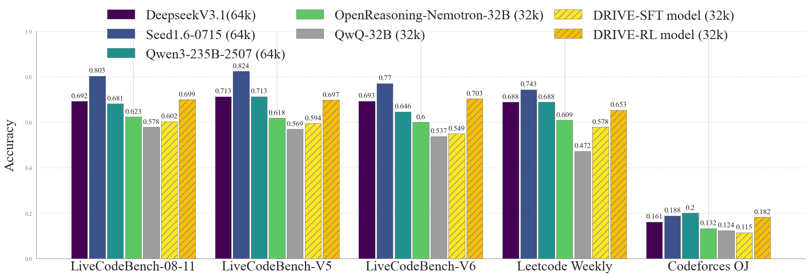
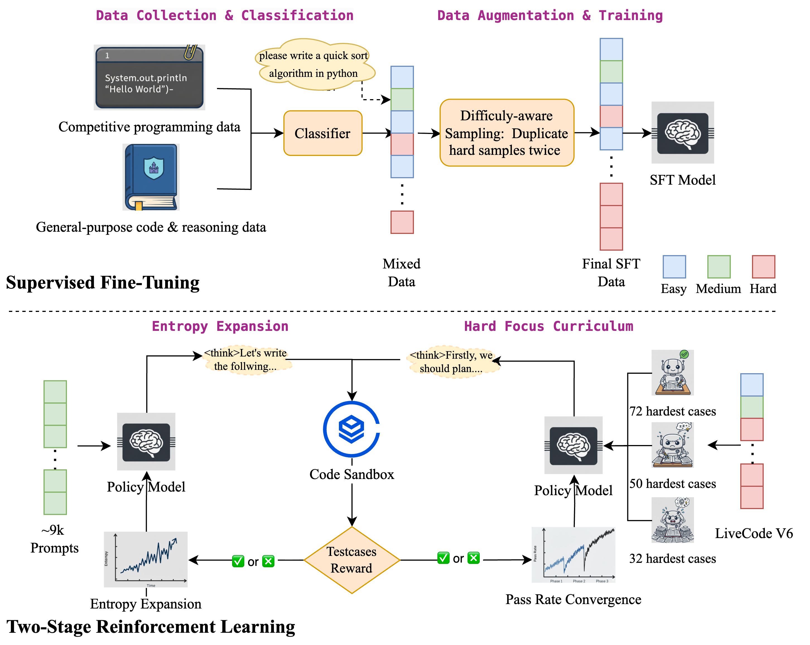
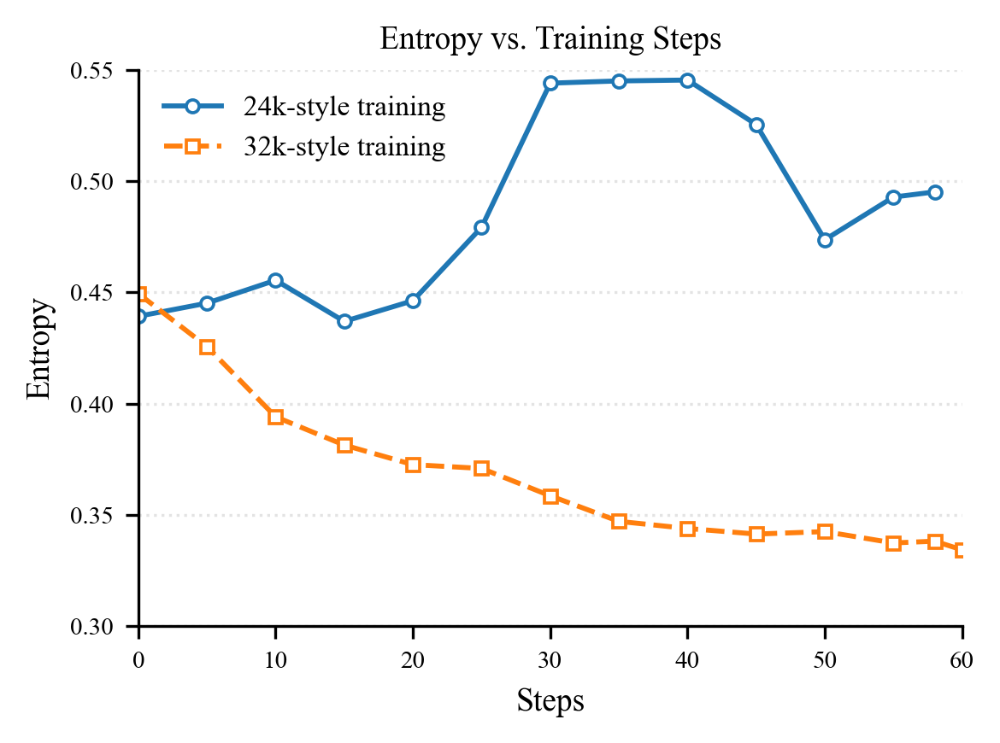
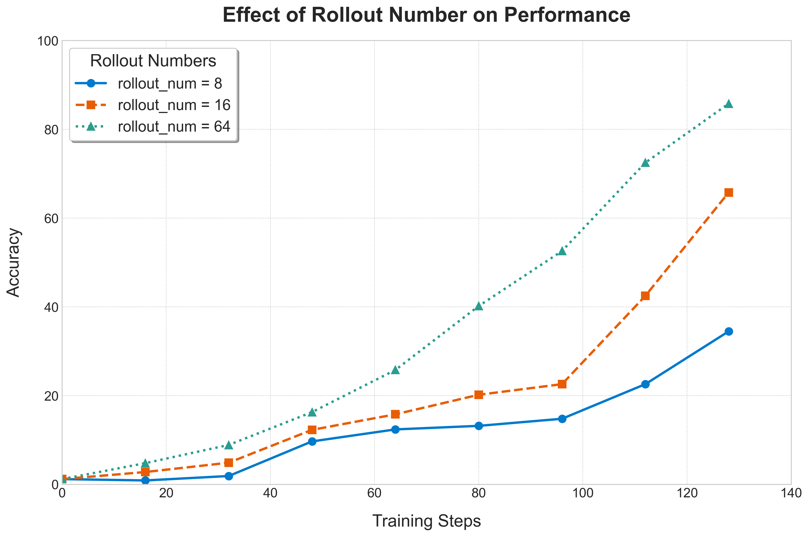
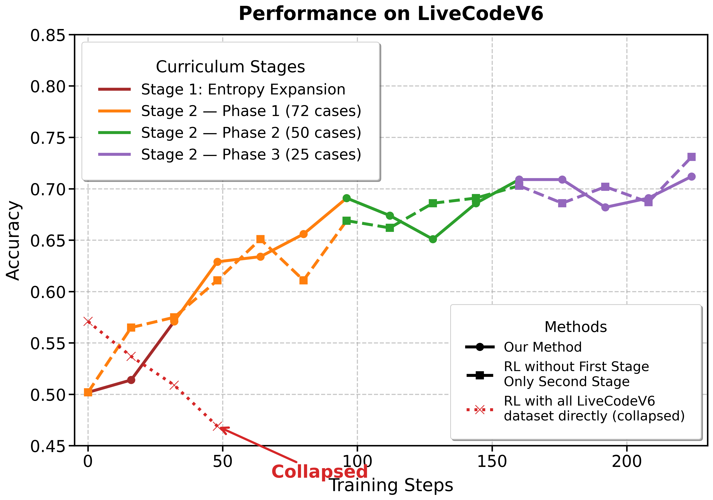
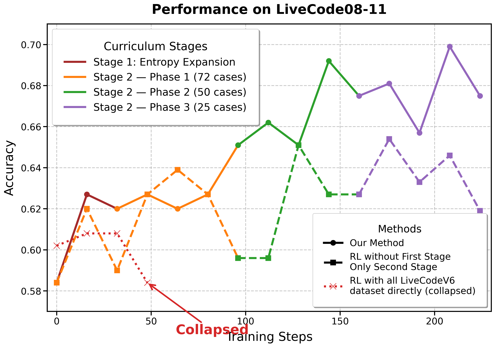

01 · TL;DR
一句话读懂 DRIVE
先用大量、难度较均衡的题和较小 rollout 扩大策略熵，再用少量真正困难的题和大 rollout 做持续“攻坚”。 作者认为：对竞技编程 RLVR，数据课程与采样预算的配置，至少和改 RL 算法同样重要。
470K
精选 SFT prompts 从 127 万条经 5 轮 arena learning 筛出，并提高难题曝光。
9K × 8
Stage 1 大而均衡的数据池，每题 8 个 rollout，24K 总序列长度，目标是扩熵。
72→50→25
Stage 2 不断保留最低通过率难题，并把 rollout 增至 64/80，集中突破能力边界。
02 · MOTIVATION
作者真正要解决的，不是“GRPO怎么改”
数学 RLVR 已有大量算法工作，但竞技编程还多了一层约束：答案不仅要推理正确，还必须能编译、通过隐藏测试、满足时间与空间复杂度。DRIVE 把问题改写为：给定 GRPO 和可验证奖励，怎样挑 prompt、怎样安排难度、怎样分配 rollout 才最划算？
重度蒸馏后的三个症状 ① 策略熵低，反复走相同解法；② 思维链和代码发生重复，最终被截断；③ 难题通常要求更长推理，SFT 很难建立稳定的长程信用。
标准均匀 RL 的盲点 容易题奖励接近饱和，几乎不给梯度；极难题全错，同组优势也缺少区分度；真正容易学到的是“中等成功率”的题。

论文图1：最终 DRIVE-RL 模型在多个代码评测集上的表现。黄色斜线柱为最终模型。
03 · PIPELINE
完整训练路线：一次 SFT，两段 RL
SFT
难例识别与加权 1.27M prompts → 5轮 arena → 470K；难题重复两次；蒸馏 DeepSeek-R1-0528。 →
RL 1
Entropy Expansion 约9K题，难度较均衡；GRPO；8 rollouts；24K；32 steps。 →
RL 2
Hard-Focus Curriculum 从175道 LiveCode V6 题中持续筛最难题；72→50→25；大 rollout；32K。 
论文图2：左侧 SFT 数据构建，右下依次是熵扩展和硬题课程学习。原图为透明背景，此处统一使用白色底色显示。
04 · SUPERVISED FINE-TUNING
SFT：筛出难题还不够，还要把 token 预算补回来
作者比较了三种策略：全量 127 万题；5轮 Arena Learning 只保留模型答错的 47 万题；以及在后者基础上对难题增加曝光的 Twice Hard Learning。核心发现不是“数据越少越好”，而是难题的信息密度更高，但训练 token 不足仍会欠拟合 。
策略 LiveCode 08-11 V5 V6 LeetCode Codeforces Basic SFT（1.27M） 58.2% 60.3% 54.5% 55.8% 11.2% Arena Learning（470K） 60.0% 59.8% 54.2% 55.3% 11.1% Twice Hard Learning 60.2% 59.4% 54.9% 57.8% 11.5%
正确解读： 47万条难例几乎追平127万全量数据，说明筛选有效；再提高难例的采样/重复权重后，多数基准达到最好。收益来自“把算力集中到仍能提供学习信号的数据”，不是简单重复越多越好。
05 · DATA CURATION
论文到底怎样识别并筛选难例？
DRIVE并没有在所有阶段使用同一个“难度分数”。论文实际给出了三层数据处理：SFT前的静态难度分类、Arena Learning按当前模型失败筛选，以及Pre-GRPO按多次采样的低通过率持续保留难题。
第一层：小模型将SFT题目分成Easy / Medium / Hard
论文原文依据 · §3.1，PDF第3页 train a small model to classify problem difficulty 随后把题目分成三类，并将Hard题在训练数据中重复两次。
论文没有交代的部分 分类器架构、标签来源、分类阈值、准确率均未给出。因此可以确认“用了分类器和三档标签”，但不能从论文复现分类器本身。
DSFT = Deasy ∪ Dmedium ∪ 2Dhard
上式是本解读对“Hard样本重复两次”的集合化表达，不是论文原公式。
第二层：Arena Learning保留当前模型答错的题
论文原文依据 · §4.3，PDF第6页 retain only the samples the model fails on 论文将数据分成5份：在前一份上训练，然后预测下一份；只把当前模型失败的样本带入后续训练。最终由127万条缩至47万条。
难度定义 这里的“难”不是固定人工等级，而是“当前阶段的模型没有解决”。模型更新后，样本是否仍是难例也可能变化。
Dk+1 hard = { x ∈ Dk+1 | current model fails on x }
这是本解读根据论文的5-fold Arena Learning流程写出的形式化表示；论文未在此处明确说明“失败”由哪些测试用例或判定器定义。
第三层：Pre-GRPO按低通过率动态保留困难题
论文原文依据 · §3.2，PDF第4页 carries forward a subset of low-pass-rate cases 也就是说，每一阶段优先把通过率较低的题带入下一阶段，形成Hard-Focus Curriculum。
论文明确与未明确的边界 论文明确使用“low-pass-rate cases”筛选，但没有完整给出pass rate的估计公式、每次筛选使用多少评估rollout，以及并列时如何处理。
解读性表达：p̂(x) = passed rollouts / all rollouts; priority(x) ↑ as p̂(x) ↓
不要把推导当原文： 用 1-p̂(x) 表示难度是自然的数学归纳，但论文只明确说保留“低通过率样本”，没有正式定义 difficulty(x)=1-p̂(x) 这一公式。
“最难”不一定等于“最适合GRPO”
通过率接近100% rollout几乎全对，组内奖励相同，相对优势弱。
通过率介于0和100% 同组有成功也有失败，通常能提供最清晰的相对学习信号。
通过率始终为0 rollout全部失败，同样缺少组内差异；论文用大rollout提高探索出成功轨迹的概率。
数据筛选主线： 静态分类器粗分难度 → 当前模型失败样本筛选 → 多rollout低通过率动态排序。前两步服务SFT数据效率，最后一步服务RL课程和计算预算分配。
06 · STAGE 1
熵扩展：为什么反而使用较短的24K训练窗口？
Stage 1 在约9K道相对均衡的竞赛题上用每题8个 rollout 训练。作者称之为“24k-style”：prompt与response合计24K。它不追求立即攻克最难题，而是先打破蒸馏模型的窄分布。

论文图3：24K-style 的熵总体上升，而32K-style持续下降。作者据此把前者解释为探索扩张阶段。 机制直觉 题目分布更广且中等难度题占比合适，同组 rollout 中更容易同时出现成功和失败，GRPO能形成有区分度的相对优势。
实际目标 增加解法多样性，减少重复思维链和截断，提升通用竞赛编程能力，为第二阶段难题攻坚提供更好的初始策略。
07 · STAGE 2
Pre-GRPO：一种“保留最难题”的课程机制
论文把 Pre-GRPO 描述为：每一阶段评估各题通过率，把低通过率样本带入下一阶段，逐步缩小训练集，但始终保留最难实例。
Phase 1
72道最难题 64-step budget →
Phase 2
50道最难题 32-step budget →
Phase 3
25道最难题 32-step budget difficulty(x) ≈ 1 - pass_rate(x); Dₖ₊₁ = HardestSubset(Dₖ)
它和传统“从易到难”的课程学习方向相反： 模型已经通过SFT和Stage 1拥有基础能力，因此Stage 2不是先学简单题，而是不断淘汰已经会做的题，把计算预算留给能力边界附近及边界之外的题。
08 · ROLLOUT BUDGET
为什么困难题必须用大 rollout？
设单次 rollout 成功概率为 p，采样 G 次至少得到一个成功轨迹的概率为：
P(at least one success) = 1 - (1 - p)G
若 p = 1% 47.4%
G=64时至少一个成功样本
若 p = 1% 55.2%
G=80时至少一个成功样本
对极难题，小 rollout 很可能全错，组内奖励相同，GRPO的相对优势接近零；增大 rollout 会提高“偶然探索出正确解”的机会，也能更稳定地估计通过率和优势。但这只是必要条件，不代表64一定最优。

论文图6：单题训练中，rollout从8增至64，学习速度明显加快。
09 · RESULTS & ABLATIONS
最终收益来自两阶段协同，不是任一阶段单独完成
下表中的模型成绩统一换算为百分比。例如论文原文的 0.602（常简写为 .602）表示 60.2%。最后一行是相对于 SFT 基线的相对增幅，不是百分点差值。
模型 LC 08-11 LC V5 LC V6 LeetCode Codeforces SFT Model 60.2% 59.4% 54.9% 57.8% 11.5% RL Stage 1 62.5% 62.7% 63.4% 60.3% 11.2% 完整 DRIVE RL 69.9% 69.7% 70.3% 65.3% 18.2% 相对 SFT 提升 +16.1% +17.3% +28.1% +13.0% +58.3%
最关键的消融证据
01
直接拿全部175道LiveCode V6做RL会崩。 LeetCode从57.8%降到29.6%，说明“高质量数据”不等于“适合当前RL阶段的数据”。
02
只用9K数据做RL，通用LiveCode变强，但Codeforces变弱。 扩熵能拓宽策略，却不能自动把探索转化为最高难度能力。
03
跳过Stage 1直接做硬题课程，训练集变强但OOD泛化不稳。 完整两阶段在所有基准上最好。

论文图4(a)：不同RL策略在LiveCode V6上的训练曲线；红线显示直接全量训练发生collapse。 
论文图4(b)：在未污染的LiveCode 08-11验证集上，完整方法的泛化更稳。
10 · CRITICAL READING
这篇论文最值得保留的质疑
A
rollout配置前后不一致。 摘要写Stage 2为64；方法3.2写80；实验设置4.1又写64。复现时必须向作者代码或配置确认，不能把80和64混为一谈。
A2
课程最后阶段题数不一致。 正文§3.2写72→50→25道最难题，但论文图2标注72→50→32。页面流程沿用正文的25，同时在此保留冲突，复现时不能擅自认定其中一个数字正确。
B
LiveCode V6既用于Stage 2训练又用于评测。 作者明确承认V6被暴露，因此V6不能作为纯泛化证据；更应看LiveCode 08-11、V5以及训练截止日期后的周赛。
C
“熵上升导致泛化”主要是相关性解释。 24K与32K实验可能还同时改变截断、有效batch、难度和训练分布，尚不能严格隔离因果。
D
成本非常高。 32B SFT使用256张GPU；难题阶段每prompt 64/80条长轨迹。论文证明了“大采样有效”，但没有给出与成本等价的最优基线。
E
内部MoE模型不可复现。 大模型缩放结果支持方法可迁移，但模型、数据和完整训练细节未公开，只能视为趋势证据。
11 · PRACTICAL RECIPE
如果要复现，应该抄什么，而不是机械抄数字
1. 先测每题可学习性 用当前策略采样，记录pass rate、reward variance、截断率和输出熵。全0与全1样本都不适合长期占用同等预算。
2. 分离“扩探索”和“攻难题” Stage 1用广覆盖、适中难度、小G；Stage 2用难例池、大G，并持续重估难度。
3. 动态分配rollout 不要所有题都G=64。中等题G=8~16，低成功率且仍可探索的题再提高到32~64。
4. 监控collapse 同时看验证集、entropy、重复率、截断率和reward方差；只看训练reward可能掩盖全量RL退化。
5. 保留OOD周赛 训练用题与最终评测严格按时间切分；被用于课程筛选的数据不能再作为核心泛化证据。
6. 做成本归一化消融 比较相同生成token预算下的G、题数和step数，才能判断收益来自课程还是单纯更多计算。
最终评价： DRIVE最有价值的贡献不是一个可直接替换GRPO的算法模块，而是一套数据工程观点：RL prompt不是静态训练集，而是需要随着策略能力变化被持续测量、筛选与重新分配计算预算的“动态课程”。